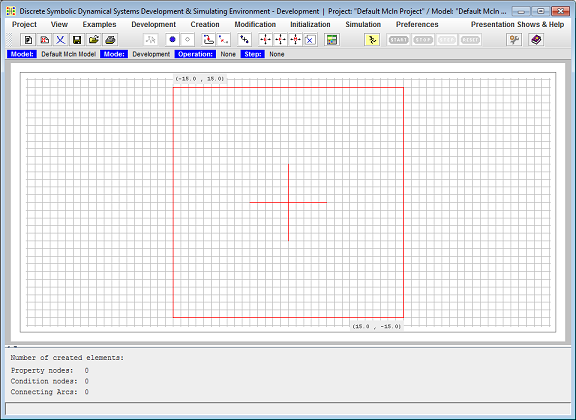
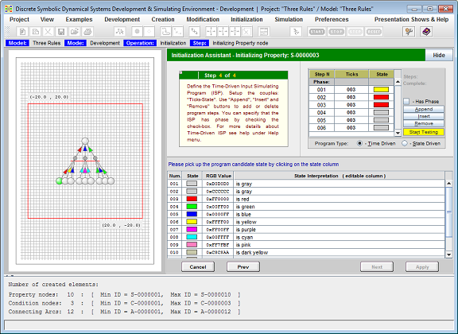
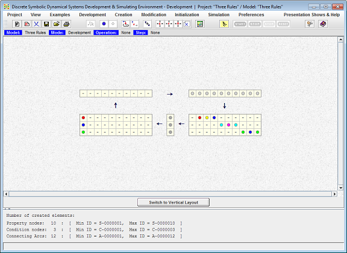
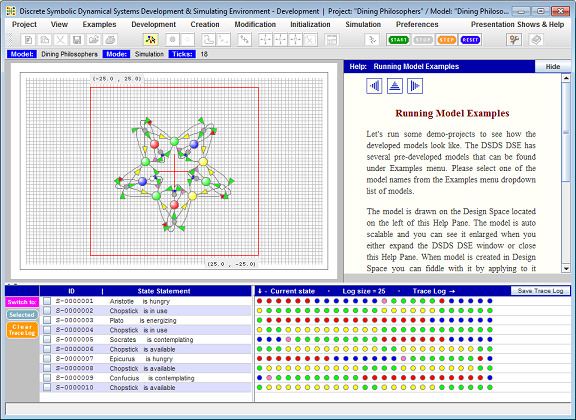
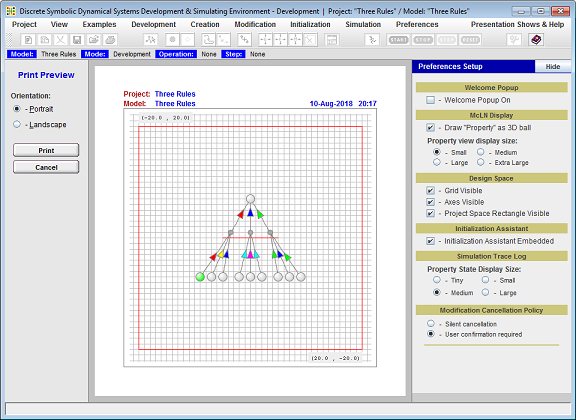

Simulation Environment
This page is a brief description of Qualitative Dynamical Systems Development & Simulation Environment backed by some screenshots. This Environment is a full-fledged Java desktop application that utilizes McLN graphical modeling formalism for design, development and simulation of qualitative dynamical system models. Respectively, the application can be set to operate in either Development or Simulation mode. In both modes menu item View => Graph or View => Matrix can be selected to represent McLN model as either bipartite oriented graph, or as a collection of mathematical vectors and matrices. By default, the application is started in Development mode and is set to represent developed model in the form of Graph View. Figure 1 represents DSDS DSE initial screen - when the application is just started.

Figure 1. Started DSDS Development & Simulating Environment.
Development Mode
While in Development mode, the Environment allows McLN model developer to create McLN Graph, set Properties initial state, initialize Arcs with their Expected or Generated states, save partially created or complete model on hard drive, retrieve it, modify, and save again. The application produces McLN file that is intended to be retrieved by Space Exploration Mission application into its Robot Behavior Controller. Figure 2 represents Project Space Graph View filled with developed Three Rules McLN model and the Initialization Assistant - a wizard like tool - open on the right side of the Design Space. Figure 3 represents same Three Rules model in Matrix View.

Figure 2. DSDS DSE in Development mode, presenting model in Graph View.
User switches Environment to Development mode by selecting menu item Development => Set Development Mode. Switching to Development mode enables Creation and Modification menus. Available under Creation menu operations are to create: Property Nodes, Condition Nodes, Polyline Arcs, Spline Arcs, and Simple Fragment. Available under Modification menu operations are: Move Model Elements, Move Model Fragments, Move Entire Model, and Delete Model Elements.
When in Development mode, the Assisting Tools Area contains Summery panel that lists the summary of the model elements by type, providing for each type the number of created in the model elements and the range of the UIDs used so far.

Figure 3. DSDS DSE in Development mode, presenting model in Matrix View.
Presented in the Matrix View McLN model is drawn as five elements - three vectors and two matrices, where:
- State Vector is the model input vector representing McLN model Properties current state.
- Condition Vector is the representation of the state of model Conditions.
- Suggested State Vector is the vector representing the change of some Properties state that are supposed be merged into State Vector before it is used as the model input at the next simulation iteration.
- And Matrix represents each Condition's state dependency relations from the state of Properties. It is used to map model StateVector to Condition Vector.
- Or Matrix represents each Property's state dependency relations from the state of Conditions. It is used to map model Condition Vector to Suggested State Vector.
Although both Creation and Modification menus are enabled while the Design Space is set to be in either Graph or Matrix View, all creating new or modifying existing model elements operations can be applied when the model is presented in Graph View only. The McLN model Matrix View currently serves for visualization purpose only.
Simulation Mode
While in Simulate mode the Environment allows McLN model developer to test developed model behavior. When switching to Simulation mode the Assisting Tools Area is filled with following panels: Property Selection panel, Property Current State panel, and Execution History Trace Log panel. These are currently available tools assisting in the McLN model development, debugging and verification. Figure 4 represents DSDS DSE screen snapshot when the Environment is in Simulation mode while Help Topics panel Running Model Examples is optionally open on the right site of the Design Space.

Figure 4. DSDS DSE in Simulation mode.
User sets Environment to Simulation mode by selecting menu item Simulation => Set Simulation Mode. Enabled in the Simulation mode toolbar buttons: Start, Stop, Step, and Reset allow developer to control simulation process. Clicking on Start button starts auto simulation process. This click disables Start and Step buttons while enabls Stop button. Clicking on Stop button stops auto simulation process and returns Start and Step buttons back to their enabled state. Clicking on Step button executes only one simulation step at a time. Clicking on Reset button resets model to its initial state.
Located below Design Space simulation analysis tools allow user to select all or subset of model Properties and analyse model behavior over time. The Model Current State Panel presents each selected Property current state and provides its interpretation in the form of statement, including Property name as the statement's subject and presenting the value of the Property current state in the form of the statement's predicate. The Execution History Trace Log panel presents selected Property states history over simulation time. Both panels are updates after each simulation tick in real time.
Printing Developed Model
DSDS DSE makes user to be able to print developed model. To activate printing facility user opens Project menu and selects Print Preview Panel item or alternatively clicks corresponding toolbar button. Figure 5 represents DSDS DSE screen when the Environment is set to print developed McLN model. For the purpose of illustration snapshot also presents Property Setup panel open on the right side of the screen.

Figure 5. DSDS DSE is set to print developed McLN model.
As it is presented on the snapshot, the printing facility allows user to print in either Portrait or Landscape format. Printed image is scaled to fit standard A4 page.